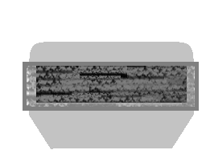

Here’s a link to a quick and dirty- read 640 by 480 upload of my gameplay from csa5g.
Tonight I’ll work on a much nicer one but I’m super crunched for time.
https://www.youtube.com/watch?v=6LLjBnkVsdE&feature=youtu.be

Here’s a link to a quick and dirty- read 640 by 480 upload of my gameplay from csa5g.
Tonight I’ll work on a much nicer one but I’m super crunched for time.
https://www.youtube.com/watch?v=6LLjBnkVsdE&feature=youtu.be
I think something is wrong with the upload, it looks kinda in… slow motion.
Nope. That’s simply how fast Black Mesa Fully Awesomefied runs when I record my videos. This is being played on a Compaq Presario…1366 by 768…with everything awesomefied.
In fact that is by far the best frame rate I got out of the 3 or 4 times I recorded this section.
Compare that to the above video wit this video of me playing BM without recording in the background of one of the very worst areas of BM.
https://www.youtube.com/watch?v=Duzftz9wZYo
Garg chase w/o recording going on.
https://www.youtube.com/watch?v=Jrp0ZqPle14
Garg chase with recording going on and heavy editing of all the really long pauses in the original footage.
It’s just the reality of not having a job or the money to get a gaming rig.
After the .50 cal fight with the vorts you open the big door and witness/partake in the aliens-HECU battle. Eventually you take a ramp up to the next floor. IMO this ramp has too many red illumination lights because they are spaced too close together. Are these in fact lights or reflective markers? Also, why red lights/markers? They don’t seem to illuminate very well. Maybe use yellow lights/markers and increase the distance between them so that there’s not as many and adjust their intensity so that they provide sufficient illumination but also captures the lighting mood you’re trying to convey.
Shortly thereafter you come to the hole in the wall overlooking the next aliens-HECU encounter. Across the yard you see the 3 skylights over the car garage. Their reflections seem to be too pristine-pure-bright. Maybe a more dirtier look/different color combo would be better. Also, consider putting a frame or lip around each skylight to give them a more substantive constructed installation look.
You’ve mentioned that you’ll be moving the crates in this area to beneath the access vent and will be removing the ladder. Suggest having the light above garage doors number 2 and 3 illuminated as well.
I know that, I was just trying to point that out indirectly and more nicely by joking a bit, so you won’t feel offended… but to get it more straight: Well, if I were you, I wouldn’t bother to have videogames as my hobby on “such machine” as yours. Either lower the settings, or play something less “resource heavy” for your system 0_o
I don’t consider THAT as playable, but that’s just me… sorry for speaking out loudly, hopefully you understand.
But not to get offtopic, I will be even more straight, people complaining about bad performance while running it on a low-end system shouldn’t be taken seriously at all, since it’s their problem, not of the game itself.
I don’t mind Dotard.
Really it runs very well when I’m not recording…very well indeed.
Well enough to take the performance hit to record Let’s Plays.
Also even if it didn’t run really really well…I’d still have played Black Mesa simply because I’ve waited for it for so long. Also I was quite prepared to have to lower the settings in order to play BM but in the end I was happy to find out that I really didn’t have to.
Also it does help developers whether large companies or a small group or a single person to know how a game performs even on the most unexpectedly low performing systems.
TextFAMGUY1, just so you know this edition ran very very well on my screenshot and my video runs. It’s been a great pleasure to put my less than ideal rig through it’s paces with more BM. The only glitch i had was the the LAV was hit and miss. In the video I think it comes out guns blazing and then just stops. But really that’s it game play wise- the Garg chase certainly runs faster. And is much, more dynamic and dramatic.
@ChickenProtector
Instead, I suggest this:
1-Text can copy and paste a small fraction of c2a5f and connect it to the beginning of his c2a5g.
That’s the way Valve made the map transition in Half-life2 and episodes(in Portal1&2 Valve used “the trick” of the elevator).
@Conti
Yep! a npc AI that finally does something smart! 
The only issue here is that the other wave does not start if there’s some vort still alive…
This thing left me baffled at the beginning because I expected another wave of vorts…
About the visual glitch with the water in c2a5h
Am I the only one that has this problem?
I forgot to add to previous post these 2 pics:
1- My “epic” fight against the osprey in c2a5f while I was floating in the air(noclip+notarget).
I was able to stuff that osprey with my snarks
2- In c2a5g I took this amazing pic.
Is there someone here that can create something cool from it with photoshop?
@ OP
I’ve been keeping an eye on this and I just want to say that I love what you’ve managed to achieve in such a short amount of time - The detail you’ve put into these maps is incredible, while being both reminiscent of Half-Life and faithful to Black Mesa’s existing level design. I did miss these levels on my first BM playthrough, and was happy that an early version of these maps were released just in time for my second playthrough.  They really make Surface Tension as it should have been.
They really make Surface Tension as it should have been.
I really hope that the dev team adopt your maps for the official Steam release once they’re optimised a bit better. Perhaps you should’ve even been working for them. 
Here’s my feedback to overwhelm you a bit more which may/may not be helpful to you (I won’t cover things I’ve noticed that other people have already mentioned):
NPCs targeting the player from a distance while having fighting going on around them (even while the player is hiding) seems to be a problem - That seems to be an AI issue, but isn’t there some kind of invisible barrier that you can add to the map that the AI can’t see through, yet the player can still shoot and walk through? If such a thing is possible, maybe it can be removed after the player passes through it to prevent exploitation.
At the start of C2A5GH, I experienced a crash when a Vortigaunt shot at me from the car park when I was standing at the end of the .50 Cal road tunnel, on the other side of the door which was glitchy before your hotfix - It was the “IVP Failed at …\ivp_utility\ivu_vhash.cxx 157” bug.
The TOW missile vs the Alien Grunt battle is incredibly difficult because reloading the TOW quickly is cumbersome (sometimes the game even refuses to let me pick up TOW missiles). BM’s TOW launcher works well against tanks or other large targets, but not so well against multiple small moving targets.
Setting up the turret, tripmines and satchel charges “correctly” in a way so that I could kill the AGrunts with the TOW launcher and survive took me about 10 attempts to figure out (I’m playing on “Hard”). This included placing the sentry turret by the M35. And that was before I read Wangman’s suggestion.
Killing the AGrunts with the TOW worked in the original Half-Life because you didn’t have to reload the launcher manually… Perhaps you can balance this better by giving the player more sentry turrets to set up instead of just the one, or add a .50 Cal to the barricade and add more AGrunts to balance that, or limit how many AGrunts that the player has to fight at once, similar to how the .50 Cal vs Vortigaunt part works, to give the player time to reload the TOW.
Note that while balancing is hard and that you shouldn’t make things too easy for your maps to not be challenging, making things too difficult for players runs the risk of frustrating people. Your level difficulty should be consistent with the rest of Black Mesa.
In the Marines vs Aliens fight where the Osprey gets destroyed by the Manta, if I watched the fighting without intervening, often too many aliens survived after they destroyed the APC and I found myself being overwhelmed by about 8 of them on “Hard” difficulty - Unless I picked them off while they were fighting the APC. Perhaps it’s possible to kill or hurt all NPCs in a short radius around the APC when it explodes, triggered by the death of the APC?
I’m glad you improved the design of the gasworks area to make it more obvious where the player needed to go, while changing it so that you didn’t have to put barrels inside the furnace to stop the fire - The first iteration of that area seemed a bit obscure and contrary to the game mechanics that the player has been learning throughout BM. But perhaps you should make the missing red valve harder to find.
If you do make the satchel pipe scene harder by making the soldier shoot at the player, you should at least add a health pack in the water so that the player has a chance to heal after the sniper.
I experienced a “HL2.exe has stopped working” crash the first time I exited the room where the security guard unlocks the doors, but I assume that’s to do with lack of optimisation.
8 ) Instead of having the security guard open all the doors from one location, maybe you ought to get him to the door that leads to the Garg sequence area to unlock the security door, and get a game over if he gets killed - Like the original HL. Maybe that’s too difficult to implement and balance, though.
If the BM dev team adopt your maps, I hope they can change the guard’s dialogue for him to make a bit more sense (What parking garage? Lambda bunker? Artillery shells?). If you have him follow you to the Garg chase scene, it’s a little weird that you part ways 'cause you enter a vent where he can’t go, and he has nowhere else to go (apart from those doors where the player can’t enter), yet he says nothing about that even though he’s hoping to get to the Lambda complex according to his dialogue.
The Gargantua sequence now makes a LOT more sense than it did in original BM. Well done!
But yeah, thanks so much for doing these maps. Awesome, awesome job.
Okay guys a few things - thanks for the continued feedback - I won’t reply word by word to all the things that have been raised since I last posted as most of them are bugfixes which I am clearly going to address (and mostly already have!)
I’ve been working on bugfixing and detailing for C2A5G, and I’ve partly been “revamping” the car park area, in particular the second floor. It looks a lot better now. Been trying to make it less bare with as little performance loss as is possible.
I’ve removed the second jump pad - the one which jumps through the narrow hole in the ceiling. It just felt rather contrived and it was VERY buggy compared to the other jumppads, it was the one by far most inclined to steal all your weapons from you and crash the game.
I’m thinking of adding another alien fight on the top floor of the parking lot (the one which is extremely destroyed). As in, not a fight between the HECU and the aliens, but just some aliens waiting in ambush for you on the top floor. Does this seem like a good idea? Does my map need a few more action segments? (It could be argued that the my maps revolve a little bit too much around watching NPCs fight rather than having gameplay).
One thing I will address which Elivance points out about the level transition from C2A5F into C2A5G, with the door being closed - that’s how it was in Black Mesa too. I didn’t change that. It’s for optimization purposes. I’d have to have that entire previous section of the level included in the map file, when you never actually access it. The BSP is already at 115% entdata capacity already, so the BSP itself is nearly full. This would be a HUGE waste of resources. I don’t think its unreasonable to say the doors could have closed behind you!
As for the crashing, I’ve been trying to address that by having less entities in play during some of the scripted sequences, it’s working well so far.
I remember in the original HL while escorting “Barney” Vorts spawned on the top floor of the bulding, or was it Alien Grunts? So yeah, good idea I think.
https://www.youtube.com/watch?v=_W2JplqmLi8 this is what I’m talking about, almost at the end of the video. Turns out I was wrong, my memory told me there were some up there “_”
Also I know this isn’t your fault, it’s BM’s design, but LOTS of Surface Tension areas are cut from their original position as they were in HL1 and pasted elsewhere, obviously it can’t be 1:1 recreation, but makes it harder to track what’s changed or missing.
Watching that video makes it COMPLETELY clear how much superior your work is in comparison to the original. I think it turned out the best possible way. I know the original was made in a previous century, but the level design really made little to no sense.
ALSO, for those complaining about weird rocks sticking from walls, it is present in the original as well ^_
sense you mentioned revamping the car park can you put the soldier impaled on a peace of metal. (it was the hint that you use the jump pads to jump up their in half life.) would be good to have the soldier there with gun in hand and script the gun to fall after the battle to show it launches things up. problem with my idea though is not many people would see it unless they see the dead hecu grunt.
on the rocks even if they aren’t logical to you guys keep in mind some building contractors might replace rocks or add rocks and plants in areas to make them seam more alive and less well boring and dead. (cacti wouldn’t be there either unless it was planted.)
side note: on the battle with the manta and the tank, think its a little strange that the destruction stops right before the tank, maybe you should have it laser all the way to the end of the road and not just stop at the tank. (or in current looks right before the tank).
also still think you would putt a metal grate over the sniper tower to show that you shouldn’t kill it.

the dark grey is the grate. the tower should also be raised so that the player can not see strait through it or at least made dark so as to explain why the player can’t see the sniper.
EDIT: also if you want that sniper to make the situation tense, place a explosive barrel on the roof with a function target(don’t know what its called just guessing) that activates if the player gets to close to it even if they are using a prop as cover… target in cover explosives next to them shoot the explosives and hope it kills them.
about the new fight on top floor.
i would try something new rather than the same hecu/vort + agrunt combo.
-hecu overwhelmed by headcrabs
-a pack of houndeye: in ST they appears only in c2a5b.
it would be a good idea to break the routine of the same enemies.
Next round of crude mockups, now for C2A5H. Continuing the feedback with everything I’ve said in mind, with some gameplay suggestions to give a bit more sauce to the chapter.
1) The big hole in the wall before the tank battle: Storytelling wise, isn’t much clear on how that wall was blown up. Instead of the current tank entrance, place it already in the middle of the road, simply pointing the cannon to the hole and then slowly turning it to the other end of the road (where is the security booth). The agrunt body in the ground below the hole will reinforce why the tank shot there. Also, get rid of the marines at the top of the buildings in this moment, because most of time they turn the tides of battle to the marine side, and fuck the player with that damn aimbot-accuracy. I couldn’t stand in front of the hole seeing the beauty of the battle with them destroying me from the buildings. (Also doesn’t make much sense a marine at the top of the bathroom building. How does he get there with rooms filled with aliens in the middle of the path?)
2) The bathroom after the ground jump-pad: A headcrab jumping at the player’s face in that room, right in the moment he faces the window, would give a good “oh shit!” moment.
Another thing (just personal taste, but anyway…): The bathroom zombies would be much more well explored without the snarks bulling them. They could be separated by the rooms to prevent their encounter. The zombies would stay in the corridor, and a closed door would enclosure the snarks inside the jump-pad bathroom until the player open the door (another big surprise for the player: he opens the door and – BOOM! – snarks stalking him).
3) The main gate as an exit for the chapter: Another place which would be more well explored, but it will demand some adjustments in the map. After the steam puzzle, instead of using the little door inside the security booth as exit to C2A5I, the exit would be in that big main gate. When the player see the road again, he will instantly spot the green light and the opened gate at the end of the road, and go right through there. In this case, YES, a good flashy cue is suited (the green lights and open gate).
Is confusing in the way it is now, because minutes before you checked the booth and found only a closed door… “Why I should backtrack there again? Nothing to see there…” If the exit is at that hidden little door, so what is the purpose of that second red light by the side of the main gate? It means nothing! So, the alive guard should unlock the Big Main Gate, not the Little-Hidden-Door. Much more neat (IMHO) and do more justice to the player’s adventure through the furnace/steam room.
4) Inside the security booth: Only adjustments on the height of weapon rack.
5) Furnace Room: There is a sign that looks out of place. I think a good placement for it could be in the pipe, right above the red valve (this way on the player’s line of sight).
Also, the explosive barrels storaged inside a hot furnace room really have no sense (they not even have gameplay purpose, hidden in that corner). They could be replaced with regular barrels.
6) Health Packs in the steam room: Maybe they could be hidden inside the truck near the dead marines, as a prize for those who likes to explore the place (also inside the truck is an obvious place to look for goodies).
7) About the HECU Sniper: People will cry, moan and complain, but don’t change that! It is perfect in the way it is (the sniper placement and the valve hatch), and I agreed totally with your design decision to put it there. Keep it. I only suggest to get rid of the metallic beams through the path to make easier to avoid the shots and crawl toward the hatch.
==
Soon the last part, for the C25I. Don’t worry, that part will have only few suggestions and will not be massive like the previous parts!
I’ll repeat the most important part of my above post to add emphasis to it:
I’m still wondering if there is such thing as an invisible barrier that the player can see/move/shoot through, yet the AI can’t, which could be triggered to vanish as the player moves past it. It’d solve problems with NPCs targeting the watching player during distant battles, IMO, if such a thing exists in the source engine.
Just came to say yes to vortigaunt ambush on third floor.
Thank you for the kind words, that’s very high praise indeed. I’m still constantly working on it to refine and make it all better!
Soldier impaled on the metal sounds pretty decent and should be easy to do. The grate for the Sniper isn’t necessarily a bad idea, but I’m not sure it’s really worth it - it should already be fairly clear to the player that they’re gonna have trouble killing him simply from the fact there’s nowhere for the explosives to impact. But the explosive barrel idea is nice, I might trial that one out.
I think it would probably just be some Alien Grunts and Vorts on the top floor (no Marines, except maybe some corpses). Don’t want to get too adventurous or break the formula of ST. I’d quite like to put a Bullsquid there but you don’t really see any others over the course of ST so it probably would stand out too much. As for your water glitch, it’s not a glitch - that’s how water is on the Source engine. In fact, that’s how water is in pretty much any game that I can think of. It doesn’t work very well. Your viewpoint aligns with the sweetspot where you’re not quite underwater but you’re not quite above it either, and the game engine doesn’t account for it. So no, there’s nothing I can do about it.
Thanks for taking the time to right this feedback, I always appreciate your incredible mockups. I’ll address the feedback point by point as you make fairly salient points.
I’m a little reluctant to have the tank there already, for a number of reasons. The first is that the tank driving into view is itself a bit of an awesome moment. That’s when the player realizes, shit is getting serious. The second reason is that the Tank poses serious problems to the fight between HECU / Aliens. If I introduce the tank when there’s still a number of HECU left fighting on the field, it can firstly wipe out the aliens extraordinarily quickly, leaving the player to face 7 Marines which he waits for the Manta to kill the tank. He’s then still left against 7 marines. It also means the tank will be firing shells at his own teammates, and miraculously not killing them, which looks weird. I’m not sure it doesn’t create more problems than it solves.
I may also move the Snarks/Zombies, not sure yet. One criticism I’ve been getting on Facepunch is that the map is too focussed on watching NPCs fight each other, so maybe having them as player encounters will alleviate that slightly. On the other hand, I find it really fun to watch them fight!
That’s a nice idea, but it poses some potential problems with implementation. Firstly, C2A5I would need to contain the entire street section of C2A5H in the background, to maintain the illusion of transition. This would strain performance and unnecessarily increase the BSP size. I could work around this by moving more of C2A5I into C2A5H, but C2A5H is, like C2A5G, at about 117% of the entity limit. It’s very full. I could give it a try, I suppose. A potential workaround would be to have those doors closing behind you once you get to the stairs, and they then lock so you can’t re-open them after the transition to C2A5I, which stays where it is currently. That’s actually how I did it at the moment - the “little man side-door” as you call it quietly locks behind the player after the level transition, which most people wouldn’t notice (I don’t think!). It means I don’t have to include large sections of C2A5H in C2A5I. It might be a bit more jarring with a huge door like that - OR MAYBE IT WON’T! Either way, I’ll give it a try.
Will move it down. It is too high.
Putting it on the pipe sounds like a nice idea. And I’ll switch them for regular barrels.
Could put some supplies in the M35, but I quite like the health being there - it’s just to help players who get to that area on low health.
I don’t plan on changing the sniper scene. I’m gonna stick to my guns on that one, as I explained in the video. I’m glad someone agrees with me!
Hope this covers everything adequately. Still working on 0.82. MANY improvements being made, probably more dramatic than the shift from 0.8 to 0.81. I’m HOPING that there’ll be serious performance gains (I haven’t tested it yet, but I had some inspired optimization ideas for C2A5G).
EDIT: Replying to this
It exists. You can use a func_brush with the solidity set to Not Solid, covered in the texture BlockLOS, which blocks the NPC’s line of sight. This is what I sometimes used to do on my CS maps to make bots less ridiculous when seeing you through foliage like bushes which you can walk through. The problem here is it’s very, VERY exploitable, and extremely difficult to get right. Once players learn the trigger boundaries they can exploit it by standing behind it, and shooting through it from behind. Or standing in front of it. Or lobbing nades through it. Etc. etc. You get my point. And if I try to prevent that by making the boundaries very HARSH (i.e. the brush disappears at the first sign of tampering) then it may have no effect and may as well not be there in the first place. It’s just too prone to abuse.
My current method works okay enough I think. They certainly attack the player A LOT less. I use a combination of aiscripted_schedule to make them attack one another (without interrupting their normal AI routines), combined with ai_relationships which are ALWAYS ACTIVE from the moment the map starts. It sets all Alien Grunts, Slaves and Marines to hate one another, with a priority of 100. They also hate the player, with a priority of 1. It’s not foolproof, but it’s good enough I think.
EDIT 2: I was just thinking about the big doors on C2A5H leading into the level transition. They’d have to be hinged doors rather than sliding doors as they have nowhere at all to slide to. Would them opening OUTWARDS onto the main street make sense? They can’t go inwards because of the M35 inside that area, and I quite like that M35.
Yeah, I noticed that RPG Marine. When I saw him (only after some few gameplays), I understood your intention, but I thought the tank would be a better explanation for the scene… Until now, with your development points. These points never passed on my head (I’m not a mapper), so your reasons are extremely fair. Hmm… Too bad.
I see your point and can understand that it may add exploitation issues even if the func_brush is set to disappear when the player moves or shoots through it - IMO that would be enough to stop players being targeted until they decided to intervene.
However, even with your mentioned scripted AI methods, I found that while it mostly works, NPCs were sometimes choosing to fire at me while I was watching the battles from afar even though the player shouldn’t be a prominent target compared to the battles raging around the NPCs - Especially considering how much those bee guns hurt on “Hard” difficulty. The result was that it made me reluctant to watch the battles and hide almost completely out of sight until they were over, before picking off the survivors.
I dunno what else to suggest to help you fix that though, but it still may be a small issue.
made a big long post on the sniper and its problems only to have my internet crash as I hit post quick reply. so simplified version.
I get that you want that sniper to add tension to the map but do to the fact that the player is to kill all snipers up to that one, would would really need something to show hey don’t kill this guy or hey your not to kill this guy. cause right now all your doing with the nest is frustrating players as they try to kill him only to have the rpg rounds fly strait through him. adding a grate, blacking out the tower, and raising it a bit. would make it more intimidating and show that hey this guy isn’t messing around he wants you dead but you can’t kill him.
as it is you have 2 options in my opinion on how to deal with him(3 if you count the jsut leave him alone one but that is not the best one).
2 would be easier but would mess with game play, 1 would be harder but might end up better in the end.
side note: either way would be a good idea to destroy the tower off screen while the player is in the gas works. mainly to explain why the snipers not shooting at you any more.
EDIT:
on the big doors make the open inwards but “jam” after allowing enough space for the player and the barney to enter, have them close as soon as the player gets to the stairs(if you add some)
There is another problem, aestheticaly speaking. I don’t know exactly wich type of door you should use (I don’t remember), but one thing I know for sure: That door must be consistent with the BM’s ST standard for the main gates, and at same time, consistent between all your maps to not look too jarring.
Unfortunately I didn’t check yet what design language the devs used for the main gates on roads to give you a nice suggestion. But you should look into it, specially in this “initial” stage of your maps. Establishing a pattern is a good way to guide your design decisions.
Founded in 2004, Leakfree.org became one of the first online communities dedicated to Valve’s Source engine development. It is more famously known for the formation of Black Mesa: Source under the 'Leakfree Modification Team' handle in September 2004.


{kind=link}
{kind=link}
{kind=link}
{kind=link}
{kind=link}
{kind=link}
{kind=link}
{kind=link}
{kind=link}